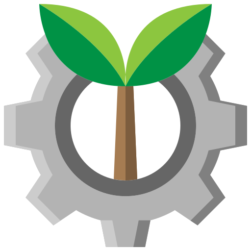
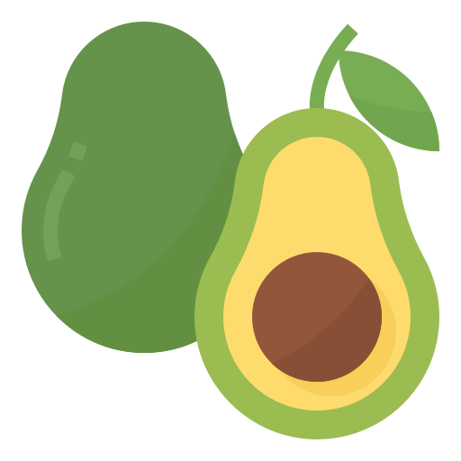
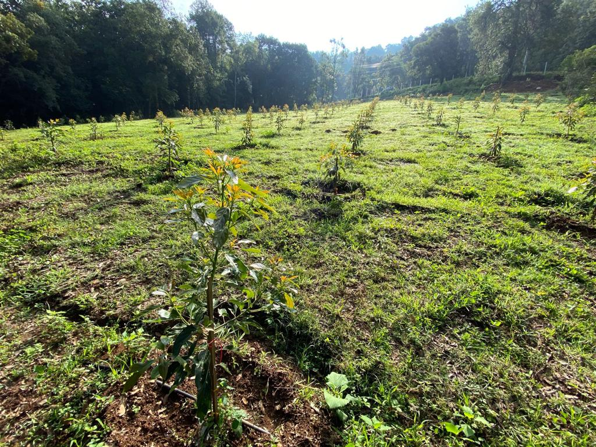
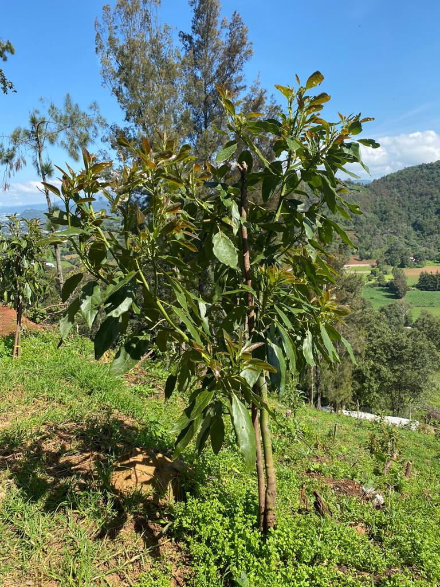
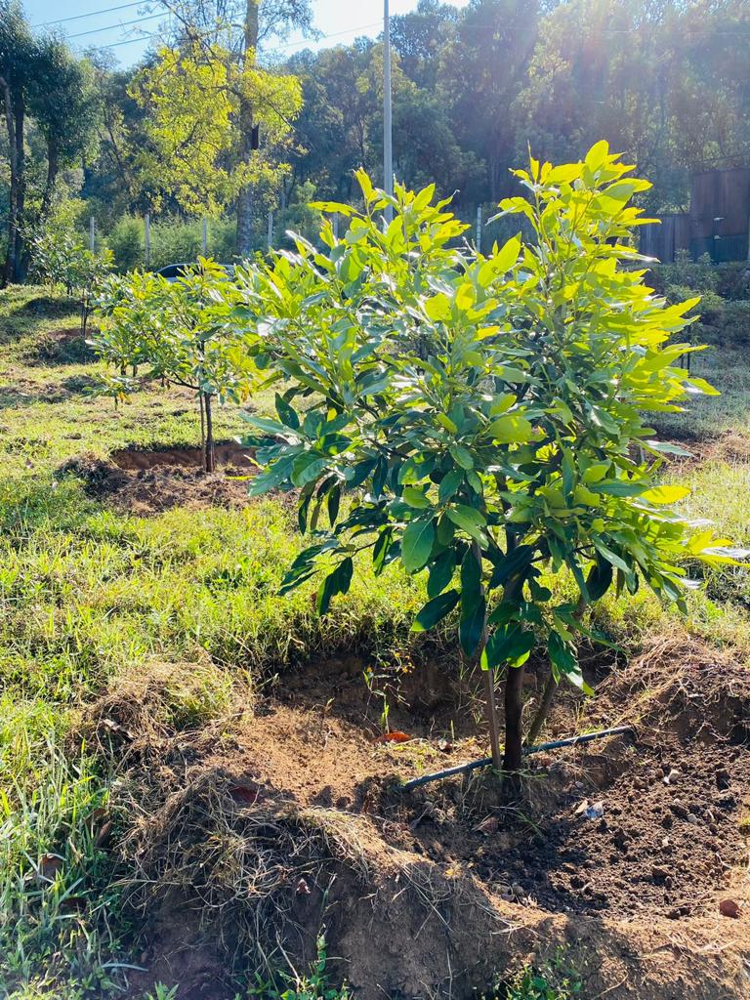

AgroNegocios


Aguacate Hass Orgánico
Hasta hoy, se han instalado 10 hectáreas de plantación, Aguacate Hass Orgánico con 6,000 árboles frutales, que se estima cosechar 480,000 kg anuales con calidad de exportación durante 45 años.





Agave Espadín Orgánico
Instalar 20 hectáreas en producción de Agave Espadín Orgánico dentro de la comunidad Tejas de Morelos, Ocotlán Oaxaca, México.
PROXIMAMENTE...